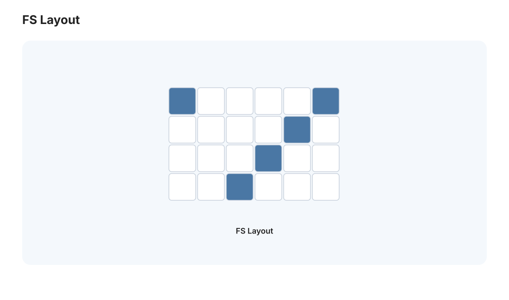
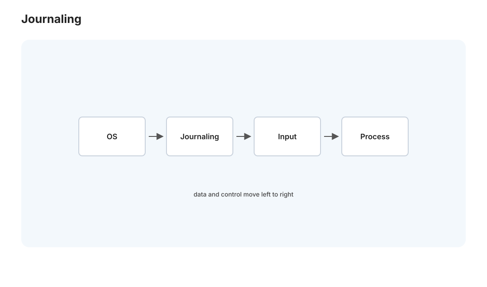
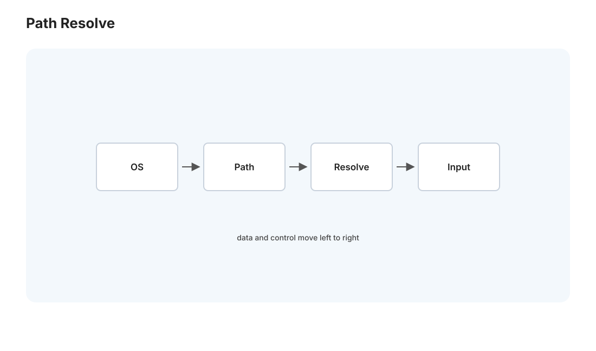

本页目录
操作系统 III · 文件系统与崩溃一致性
对标：MIT 6.S081 / OSTEP 持久化篇 ｜ 前置：os-01/02、csapp-02（磁盘在存储金字塔底层） OSTEP 三大主题的最后一个——持久化。内存断电即失，文件系统负责把数据可靠地存进磁盘、并在崩溃后不损坏。这一页讲文件系统怎么把"文件与目录"这个抽象铺在裸盘的扇区上（inode、目录、分配），以及最难的部分——断电发生在写一半时，怎么保证不变成一团乱麻（崩溃一致性：日志与 fsck）。这也直接是 db 线事务恢复的前身。
1. 从裸盘到文件抽象

磁盘/SSD 只提供"编号的块，可读可写"。文件系统在其上盖起抽象：
- inode（索引节点）：每个文件的元数据 + 数据块指针——存文件大小、权限、时间戳，以及"数据在哪些块"。文件名不在 inode 里（关键！）。
- 目录：就是一种特殊文件，内容是"文件名 → inode 号"的表。于是"路径解析"
/a/b/c= 从根 inode 逐级查目录表。因为名字和 inode 分离，硬链接（多个名字指向同一 inode）自然成立。 - 数据块寻址：小文件用直接指针，大文件用多级间接块（inode 存"指向指针块的指针"）——和虚拟内存的多级页表同构（csapp-04），都是"稀疏 + 可扩展"的树形索引。
- 空闲管理：位图记录哪些块空闲。
磁盘布局：[超级块（全局元数据）| inode 位图 | 数据位图 | inode 表 | 数据块]。理解这个布局，你就能回答"创建一个文件要改磁盘上哪几处"——这正是崩溃一致性的关键。
2. 性能：为什么文件系统要那么多花招
磁盘（尤其机械盘）随机访问极慢（寻道 ~10 ms，是内存的十万倍，🔗 csapp-02）。文件系统的大量设计是在对抗这个：
- 块缓存（page cache）：把磁盘块缓存在内存——读写先命中内存，这是"第二次
cat大文件秒开"的原因。 - 预读 + 延迟写：顺序读时提前拉、写时先攒在内存批量刷（这带来崩溃一致性的麻烦，见下）。
- 布局优化：把一个文件的块、把目录和它的 inode 放得物理邻近，减少寻道（FFS 的柱面组思想）。SSD 时代随机访问便宜了，但写放大、擦除块又带来新约束（日志结构文件系统 LFS 顺应之）。
3. 崩溃一致性：本页的核心难题

问题：往文件追加一块数据，要更新三处磁盘：inode（新块指针 + 大小）、数据位图（标记块已用）、数据块本身。磁盘一次只能原子写一个块——如果在写了其中一两处后断电，文件系统就处于不一致状态：
- 只写了位图，没写 inode → 块泄漏（标记已用但没人指向它）。
- 只写了 inode，没写位图 → 同一块可能被再分配（灾难：两个文件共享数据块）。
两种解法：
① fsck（崩溃后扫描修复）：重启后扫全盘，检查一致性并修补（位图与 inode 对不上就以 inode 为准等）。缺点：要扫整个磁盘，TB 级盘要几小时——不可接受。
② 预写日志（journaling / write-ahead logging）【核心机制】：先把"我要做的所有修改"作为一个事务写进磁盘上的日志区，写完并标记提交（commit）后，再把修改实际应用到文件系统。崩溃后只需重放日志：
- 崩溃在日志写完提交前 → 日志不完整，丢弃，文件系统保持旧状态（原子性：修改要么全做要么全不做）。
- 崩溃在提交后应用前 → 重放日志，补完修改。
关键洞察：通过"先顺序写日志、再更新原地"，把'多处修改'变成了'一次原子提交'——代价是每个数据写两遍（日志 + 原地），故有只记元数据的折中（ordered 模式）。这个"预写日志 → 提交 → 应用/重放"的模式，就是 db-03 数据库事务恢复（WAL）的原型——文件系统和数据库在崩溃一致性上是同一套思想，本站在此埋下这条主线。
4. fsync 与持久化的真相
write() 返回不代表数据落盘——它可能还在内存的 page cache 里。要真正持久化必须 fsync()（强制刷盘）。这是无数数据丢失事故的根源：程序以为写成功了，断电后数据没了。数据库、消息队列在提交时必 fsync（并因此慢）。"写入成功 ≠ 持久化"是每个做存储/后端的人必须内化的一课（🔗 db-03、web-02 的数据可靠性）。
5. 练习与要点

例 1（路径解析手走） 解析 /home/user/a.txt：根 inode（固定号）→ 读根目录找 home 的 inode → 读 home 目录找 user……一步步走一遍，理解"每级目录都是一次磁盘查找"（也解释了深路径 + 冷缓存为什么慢）。
例 2（崩溃时刻分析） 追加写的三处更新，枚举"在第 1/2 处之后断电"分别导致什么不一致——手推一遍，你就懂了为什么需要日志。
例 3（fsync 实验） 写文件不 fsync 然后立即拔电源（虚拟机里模拟）——数据可能丢；加 fsync 后保证在。"要么慢要么可能丢"的存储权衡亲手体会一次。\(\blacksquare\)
📋 大 Project P01（第三阶段·收官）· xv6 文件系统
P01-C · 文件系统与 mmap（承接 P01-A/B）：
- 学习目标：理解 inode 指针树、路径解析、符号链接、文件页与虚拟内存页之间的关系；把“文件系统”和“虚拟内存”两章接起来。
- 教师提供：
bigfile、symlinktest、mmaptest公共测试，崩溃一致性讨论题，不提供内核实现补丁。- 学生任务：① 给 inode 增加二级间接块，支持更大文件；② 实现
symlink与递归路径解析，处理循环链接深度上限；③ 实现最小mmap/munmap：懒加载文件页、脏页写回、进程退出清理映射。- 接口约束：
mmap至少支持MAP_SHARED、读写权限检查、页对齐；不得一次性把整个文件读进内存；符号链接解析必须避免无限递归。- 验收测试：大文件读写正确；符号链接跨目录、删除目标、循环链接测试行为合理；
mmaptest全过；usertests回归全过。- 评分重点：inode 扩展 25%，路径/符号链接 20%，mmap 缺页与写回 35%，边界测试与报告 20%。
- P01 总结报告：要求学生画出 xv6 的系统调用、调度、锁、文件系统、页表五张小图，并说明每阶段改动如何穿过这些边界。
操作系统三页完成。下一页转入网络 I：数据如何跨越世界到达，TCP/IP 分层与可靠传输、拥塞控制。